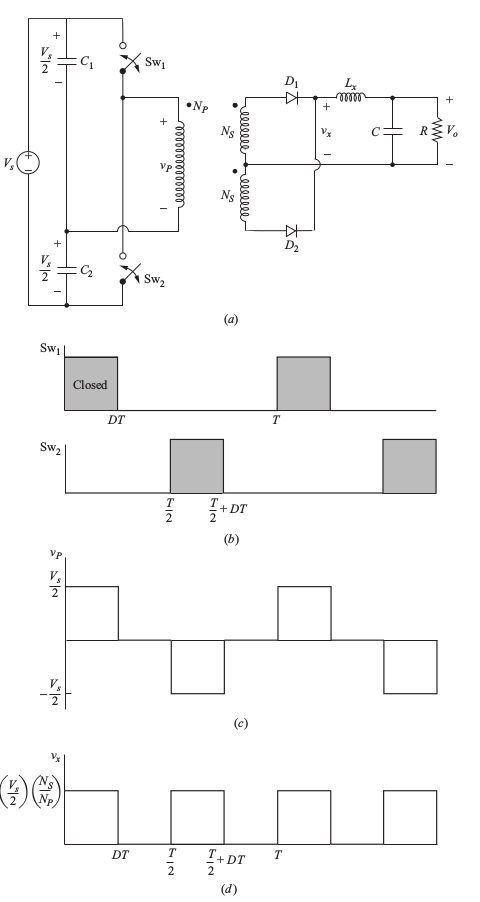

class: center, middle # EE-464 STATIC POWER CONVERSION-II # Switching Power Supplies ## Ozan Keysan ## [keysan.me](http://keysan.me) ### Office: C-113 <span class="meta">•</span> Tel: 210 7586 --- # Half Bridge Converter -- <img src="./images/ee464/half_bridge.png" alt="Drawing" style="width: 800px;"> ### Derived from the Buck Converter --- ## Half Bridge Converter: Operating Modes -- <img src="./images/ee464/half_bridge_operating.png" alt="Drawing" style="width: 800px;"> --- ## Half Bridge Converter: Operating Modes  --- ## Half Bridge Converter # \\(V_o = V_d (\dfrac{N_2}{N_1})D\\) ## \\(D < 0.5\\) ## Half of the push-pull converter --- # Full Bridge Converter -- <img src="./images/ee464/full_bridge.png" alt="Drawing" style="width: 800px;"> ### Compact solution for high power levels (>500W) --- ## Full Bridge Converter: Operating Modes -- <img src="./images/ee464/full_bridge_operating.png" alt="Drawing" style="width: 800px;"> --- ## Full Bridge Converter: Operating Modes <img src="./images/ee464/full_bridge2.png" alt="Drawing" style="width: 400px;"> --- ## Full Bridge Converter # \\(V_o = 2 V_d (\dfrac{N_2}{N_1})D\\) ## \\(D < 0.5\\) ## Twice of the half-bridge converte ## Same with the push-pull converter --- # Current Source Converter -- <img src="./images/ee464/current_source_converter.png" alt="Drawing" style="width: 800px;"> ## Fed with constant source current --- # Current Source Converter <img src="./images/ee464/current_source_converter.png" alt="Drawing" style="width: 800px;"> ## Same with push-pull, but the inductance moved to the source side --- # Voltage Source Converter: -- ## Do not turn both switches ON (to prevent short-circuit) -- # Current Source Converter -- ## Do not turn both switches OFF (to prevent open-circuit) --- # Current Source Converter: Operating Modes <img src="./images/ee464/current_source2.png" alt="Drawing" style="width: 400px;"> --- # Current Source Converter # \\(V_o = V_d (\dfrac{N_2}{N_1})(\dfrac{1}{2(1-D)})\\) -- ## \\(D > 0.5\\) # Operates as a: -- Boost Converter --- ## You can download this presentation from: [keysan.me/ee464](http://keysan.me/ee464)